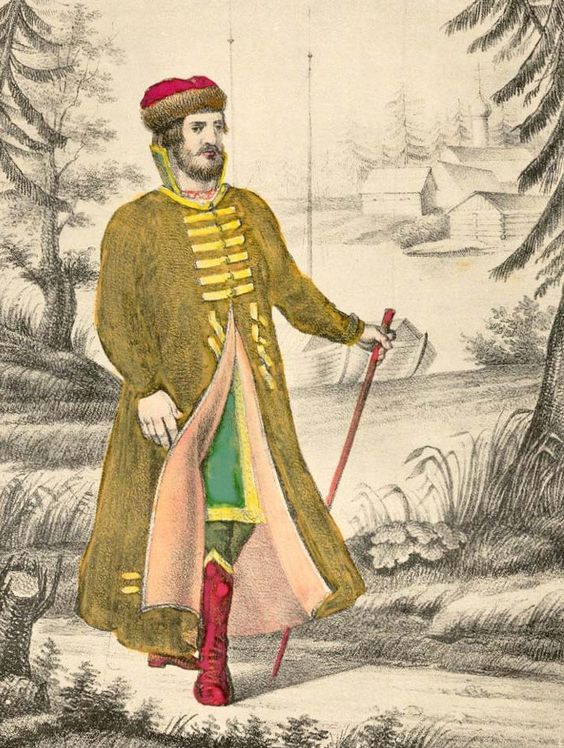
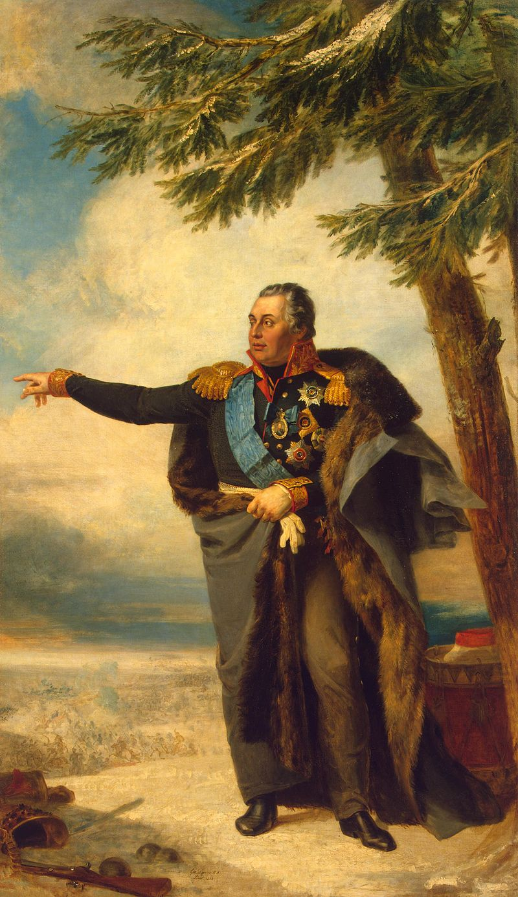
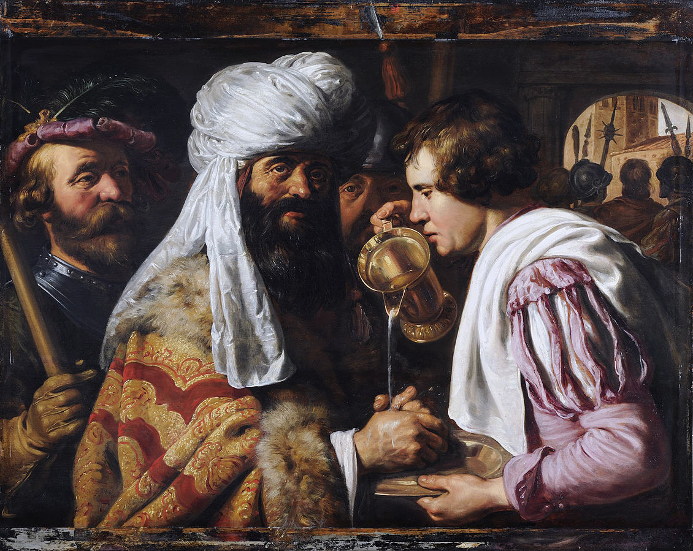

두 도시의 분위기 - 쿠투조프의 등장
게시: 2020-06-01T06:30:09+09:00
전방에서 프랑스군과 러시아군, 나폴레옹과 바클레이 등이 뒤엉켜 몸과 마음이 다 고생하는 동안, 후방의 러시아인들도 적어도 마음은 큰 고생을 하고 있었습니다. 당시 러시아 제국의 수도이자 황실 가족들이 모여 살던 서구적 도시 상트 페체르부르크는 상류층이나 서민층이나 모두 '이 전쟁은 이미 진 것'이라는 패배주의가 주도적이었습니다. 모스크바에서 자금과 인력을 모집하는데 성공하고 8월 초 상트 페체르부르그로 돌아온 알렉산드르가 보니, 심지어 자기 모친인 황태후조차도 각종 귀중품을 이미 도시 밖으로 빼돌려 놓고 자신도 언제든 피난갈 수 있도록 마차를 준비시켜 놓은 상태였습니다. 다른 귀족 가문들도 모두 말과 마차를 즉시 출발 가능 상태로 대기시키고 있었습니다. 그러나 상트 페체르부르그와는 달리 모스크바는 적어도 처음에는 꽤 낙관적인 분위기였습니다. 모스크바 시민들이 전세에 대해 비정상적으로 낙관했던 것은 그 시장인 로스톱친(Fyodor Vasilyevich Rostopchin) 백작의 공로가 컸습니다. 그는 러시아 귀족 출신 군인치고는 꽤 수완있는 선동가여서 시내 곳곳에 선전 벽보 등을 붙이고 러시아군이 승전을 거듭하고 있다는 가짜 뉴스도 부지런히 자체 생산하여 뿌리는 등 애국주의 정서를 부추겼습니다. 그래서인지 상류층 시민들이 집에서도 모두 프랑스어를 쓰는 도시치고는 굉장히 러시아 국민주의 정신이 팽배해있었고, 그것이 도가 지나쳐서 길거리에서 프랑스어든 독일어든 외국어를 쓰는 사람은 봉변을 당하는 일이 점점 늘어날 정도였습니다. 스몰렌스크 전투가 달아오르고 있던 8월 17일, 왜 그랬는지는 모르지만 모스크바에는 스몰렌스크에서 러시아군이 나폴레옹을 격퇴하여 프랑스군 1만7천이 죽고 1만3천이 포로로 잡혔다는 소식이 전해졌고 시민들은 크게 기뻐했습니다. 다음날인 8월 18일에는 주변 농촌에서 보충병으로 소집된 농민들이 스몰렌스크로 출발하는 출정식이 열렸습니다. 이 비무장 농민들은 민병대 제복, 그러니까 그냥 넓은 러시아 전통 바지에 장화를 신고, 긴 러시아 전통 상의인 카프탄(kaftan)과 헝겊으로 된 모자를 쓰고 러시아 정교회 사제의 성수 축복을 받으며 씩씩하게 출발했습니다. 모스크바 시민들은 자신감이 넘쳤습니다.

(카프탄(kaftan)은 카자흐스탄이나 투르크 등 주로 중앙 아시아에서 많이 입는 긴 겉옷입니다. 러시아의 전통 복장이기도 합니다. 당시 러시아 농민병들이 입었던 카프탄은 이 그림에 나오는 것보다는 많이 짧아서, 무릎 정도까지 내려왔다고 합니다.) 하지만 이런 분위기는 며칠 뒤 스몰렌스크가 함락되었다는 소식이 날아들자 급변했습니다. 스몰렌스크가 함락되다니 ! 빌나나 민스크, 비텝스크 등과는 달리 스몰렌스크는 진짜배기 러시아 도시였고, 그것도 성스러운 요새 도시였습니다. 사람들은 갑자기 겁에 질렸습니다. 당장 반응을 보인 것은 상인들이었습니다. 갑자기 모든 외상거래가 거절되면서 현찰을 요구하기 시작했고, 특히 기존 빚 독촉이 심해졌으며, 재고품을 급히 할인 판매하기 시작했습니다. 일반 시민들도 귀중품을 시외로 빼돌리거나, 파묻거나, 벽 속에 감추기도 했습니다. 당연히 피난을 떠나는 시민들도 크게 늘었습니다. 애초에 모스크바 시민들 중에는 시골에 장원을 가지고 있고 보통 여름철은 거기서 보내는 사람들이 많았는데, 전쟁 소식도 듣고 7월말 짜르의 모스크바 방문도 구경할 겸 시골 장원으로 내려가지 않은 가족들이 많았습니다, 로스톱친의 딸이 적은 일지를 보면 그런 사람들이 갑자기 장원에 내려가야겠다면서 서두르는 바람에 매일같이 수백 대의 마차들이 시외로 빠져나갔는데, 대부분 여자와 아이들이 타고 있었습니다. 그러나 모스크바 시민들의 잔뜩 부풀어진 국민주의 정신은 쉽게 꺾이지는 않았습니다. 그런 피난 마차에 젊은 남자가 타고 있는 것을 보면 사람들이 야유와 욕설을 내뱉으며 소란을 피웠습니다. 물론 입만 애국을 떠벌이다 피난을 가려던 젊은 귀족들도 살겠다는 의지가 강해서, 그런 봉변을 피하려고 여장을 하고 빠져나가기도 했답니다. 그리고 이렇게 분기탱천한 모스크바 시민들의 분노는 전방의 러시아군 진영에서처럼 역시 한 사람을 향했습니다. 나폴레옹이 아니라 바클레이였습니다. 바그라티온을 선두로 해서 고위 장교들이 로스톱친 등 친구와 가족들에게 계속 편지를 보내고 있었는데, 하나같이 다들 러시아군이 패배하지도 않았는데 후퇴하는 이유는 저 독일인 배신자 바클레이 때문이라고 저주를 퍼부었기 때문이었습니다. 미담은 천천히 퍼져도 악담은 빨리 퍼진다고, 곧 모스크바 시내에서 마차를 모는 마부들까지도 '이 모든 것이 바클레이 때문이다' 라며 욕설을 퍼부어댔습니다. 그렇게 다들 바클레이를 욕한다는 점에서는 모스크바와 상트 페체르부르그가 일치단결했습니다. 오직 한명이 바클레이를 믿고 지지했습니다. 바로 짜르 알렉산드르였습니다. 그는 무엇보다 바클레이의 성실성과 능력을 신뢰하고 있었고, 또 이제 와서 바클레이를 교체한다면 자신의 사람 판단이 잘못 되었다는 것을 자인하는 꼴이 되었으므로 더욱 바클레이를 지지했습니다. 그래서 비텝스크에서 바클레이에게 군 통수권을 넘겨주며 떠날 때도 스몰렌스크는 꼭 사수하라고 지시했던 것입니다. 아마 당시 바클레이의 어머니보다도 알렉산드르가 더 스몰렌스크에서 바클레이가 승리하기를 간절히 기도하고 있었을 것입니다. 그런데 민심은 알렉산드르가 생각한 것보다도 훨씬 더 안좋게 돌아갔습니다. 스몰렌스크는 고사하고 비텝스크를 내어준 것에 대해서도 바클레이를 잘라버리라는 원성이 자자해서, 알렉산드르조차도 더 이상 조야의 원성을 감당할 수 없는 지경이 되어버리고 말았습니다. 스몰렌스크 전투가 시작되던 8월 17일, 상트 페체르부르그에서는 알렉산드르도 참석한 회의가 열렸고, 이 자리에서 고위 장성들은 열띤 논의 끝에 만장일치로 쿠투조프(Mikhail Illarionovich Golenishchev-Kutuzov)를 바클레이의 후임자로 천거했습니다. 이미 그 이전부터 러시아군에서는 러시아인 총사령관을 원했고, 순수 러시아인 중에서는 쿠투조프 외에는 충분한 경험과 연륜이 있는 사람이 없었기 때문이었습니다.

(쿠투조프입니다. 그는 당시 67세의 나이로서, 사실 역동적인 지휘관 역할을 하기에는 너무 나이가 많았습니다.) 그러나 알렉산드르의 혈통이 러시아인들이 그토록 싫어하던 독일계라서 그런지는 몰라도, 알렉산드르는 전부터 대놓고 쿠투조프를 싫어했습니다. 일단 알렉산드르는 쿠투조프가 게으르고 사생활도 난잡한데다 옷차림도 깔끔하지 못한 것이 딱 질색이었습니다. 그렇다고 전쟁터에서 뛰어난 작전 능력을 보여주는 것도 아니었지요. 결정적으로 알렉산드르는 쿠투조프와 함께 아우스테를리츠에서 나폴레옹에게 대패를 당했던 기억 때문에라도 쿠투조프를 싫어했습니다. 알렉산드르는 3일 동안이나 쿠투조프의 임용을 재가하지 않고 차라리 베니히센이 차기 총사령관으로 어떻겠는가를 제시하는 등 쿠투조프에 대한 반감을 밝혔으나, 러시아 귀족들과 장성들의 입장은 완강했습니다. 베니히센도 바클레이와 다를 바 없는 독일계 러시아 귀족이었던 것입니다. 모스크바 시장이자 자신의 심복인 로스톱친도 편지를 보내와서 '모스크바의 일치된 목소리는 쿠투조프'라는 뜻을 밝혔습니다. 결국 알렉산드르도 어쩔 수 없이 쿠투조프를 임명하며 측근에게 '대중이 그를 원한 것이다. 나는 그의 임명에 대해서 (예수를 십자가형에 처한 빌라도처럼) 손을 씻었다'라고 말하기도 했고, 나중에 바클레이에게 직접 편지를 보내어 '그들의 뜻에 난 따를 수 밖에 없었다' 라며 개인적인 아쉬움을 전달하기도 했습니다.

(손을 씻는 빌라도입니다. 17세기 네덜란드 미술 황금기 화가인 Jan Lievens의 그림입니다.)
어쨌거나 이제 드디어 쿠투조프가 러시아 야전군의 총사령관이 되었습니다. 이제 러시아군은 일치단결하여 기쁜 마음으로 나폴레옹과 싸울 수 있었을까요 ? 쿠투조프를 맞이하는 러시아군의 분위기는 꼭 그런 것만은 아니었습니다. 그러나 그 이야기를 하기 전에, 먼저 쿠투조프가 과연 어떤 사람이었는지를 보시겠습니다.
Source : 1812 Napoleon's Fatal March on Moscow by Adam Zamoyski https://en.wikipedia.org/wiki/Mikhail_Kutuzov https://www.pinterest.fr/pin/282389839106488652/ https://en.wikipedia.org/wiki/Mikhail_Kutuzov https://commons.wikimedia.org/wiki/File:Jan_Lievens_-_Pilate_Washing_his_Hands_-_WGA13005.jpg
{kind=link}